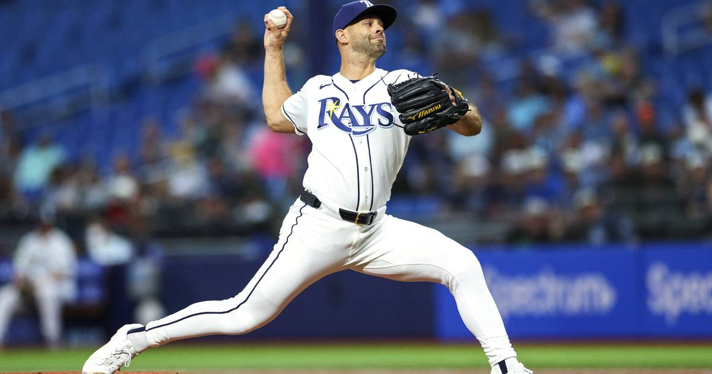

Rays Name Nick Martinez Game 1 Starter Over Rasmussen
Kevin Cash is giving Drew Rasmussen an extra day after a heavy October workload, so Nick Martinez gets the ball against Jacob Misiorowski in Friday's World Series opener at American Family Field.

Disclosure: this post contains affiliate links. I earn a commission on qualifying purchases.
The decision
The Rays have named Nick Martinez their Game 1 starter for the World Series. Manager Kevin Cash said the club prioritized giving ace Drew Rasmussen an extra day of rest after a heavy October workload — so the veteran right-hander gets the opener instead.
The matchup
• Tampa Bay: Nick Martinez (RHP)
• Milwaukee: Jacob Misiorowski (RHP)
• When: Friday, 8 p.m. ET
• Where: American Family Field, Milwaukee
The World Series opens with a starter matchup nobody had penciled in a week ago — and it says everything about how the Rays think. They'd rather have their ace at full strength for Game 2 than trot him out on short rest in Game 1.
The takeaway
This is the Rays in a nutshell: process over optics. Martinez against Misiorowski is a mismatch on paper, but Tampa Bay is betting that a rested Rasmussen in Game 2 is worth more than the appearance of sending their best arm out first. First pitch Friday decides who's right.
Sources: Rays reveal World Series Game 1 starting pitcher (USA Today); Rays: Nick Martinez to start Game 1 (Sportsnet).
Gear up: Fanatics